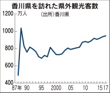
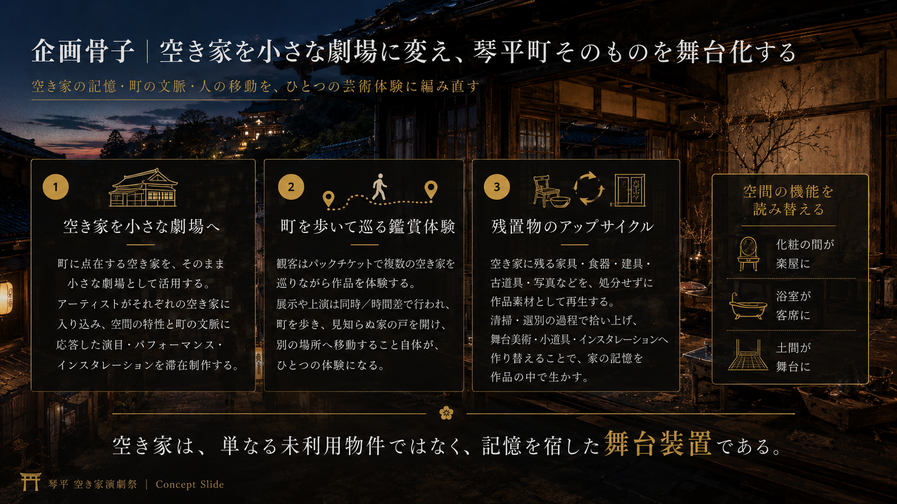
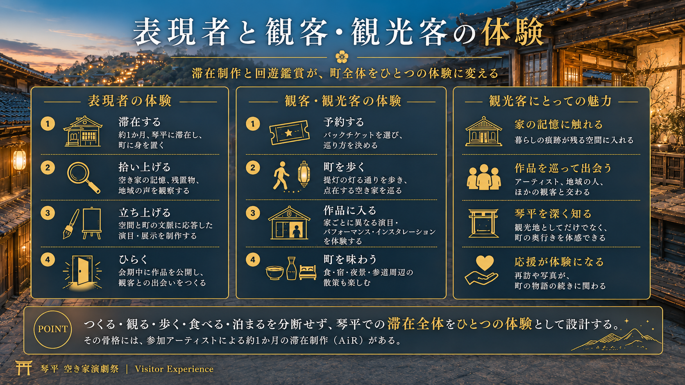
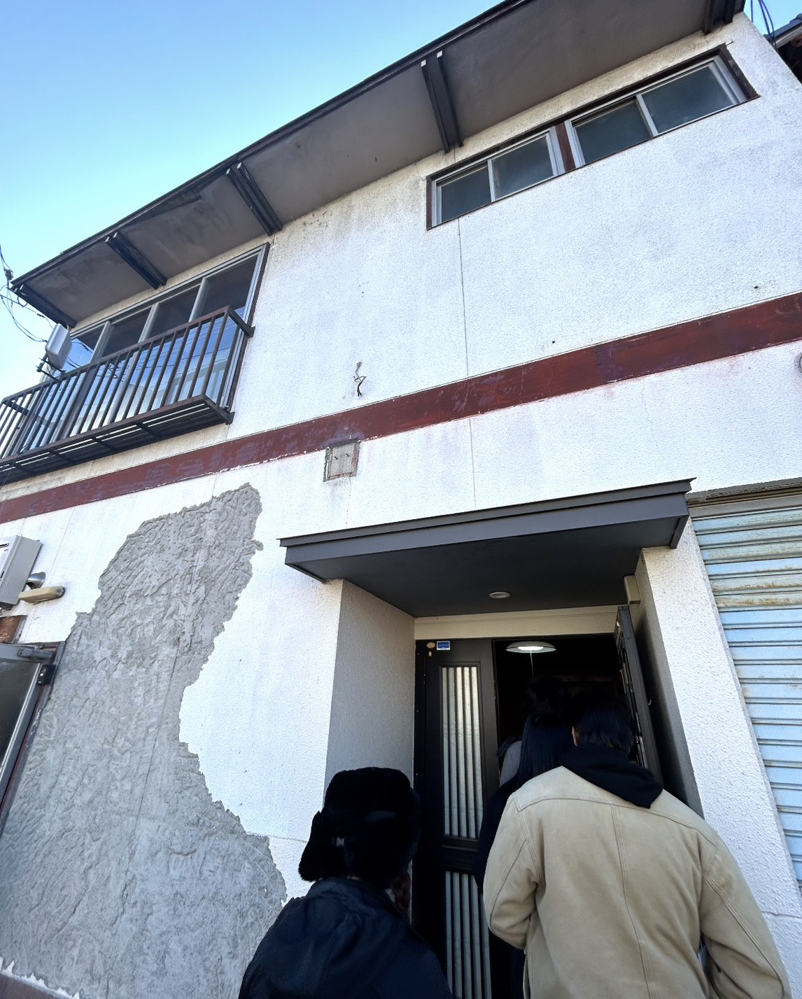
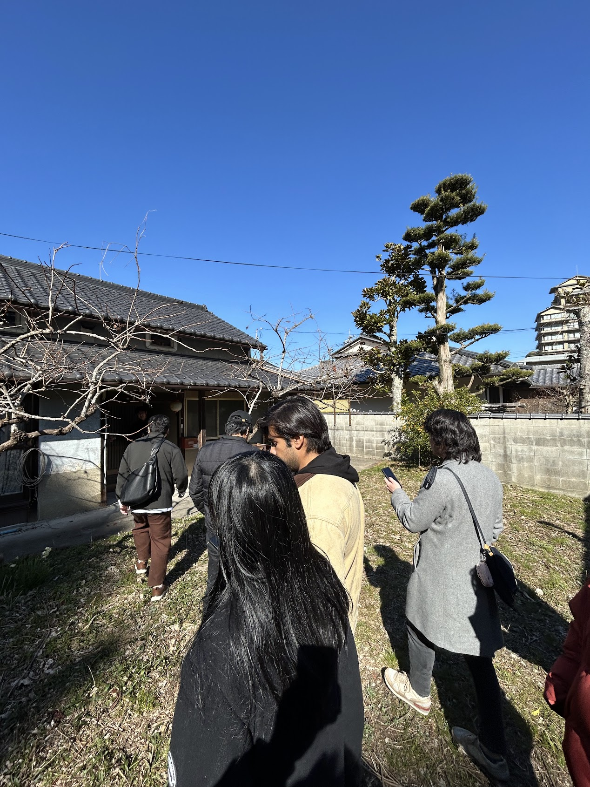
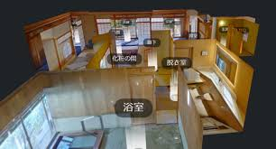
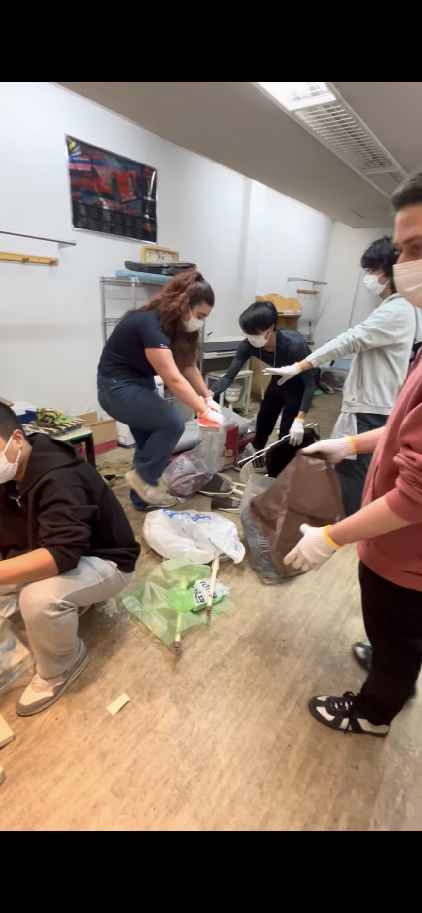

785段を登って、3時間で帰る。
9割が来て、4割しか泊まらない門前町に、空き家は増え続ける。
金刀比羅宮には人が来る。だが参拝後に町を回遊し、飲食・宿泊・鑑賞・体験へつながる仕組みは弱く、日帰り客の滞在は平均3.09時間、最頻値は2時間。観光客の約9割が訪れても、町内に泊まるのは38.9%にとどまる。来訪の量を、滞在の深さに変えられていない。
その裏で、町の空き家率は7.1%（地区により最大9.0%）まで上昇し、高齢化率は40.8%。使われない家は増え、担い手は減っていく。これは琴平だけの話ではない——全国の空き家は900万戸・空き家率13.8%で過去最高、香川県は18.6%で全国10位。本企画は、この全国共通のクリティカルな課題に、琴平から答えを出す試みだ。

人は来ている。問題は「滞在しない」こと（出所：香川県）。
出典：琴平町来訪者調査（平成28年, n=411）／第2期琴平町空家等対策計画（改訂版・令和6年, 町実態調査）／琴平町（高齢化率 2024.1.1）／総務省 令和5年住宅・土地統計調査。※空き家率は町独自調査で総務省統計とは定義が異なる。

町に点在する空き家を、小さな劇場にする。アーティストがそれぞれの空き家に入り込み、その空間と町の文脈に応答した演目・パフォーマンス・インスタレーションを滞在制作する。観客はパックチケットで複数の空き家を巡りながら、作品を体験していく。展示や上演は同時／時間差で行われ、町を歩き、見知らぬ家の戸を開け、別の場所へ移動すること自体が、ひとつの体験になる。
空き家は、単なる「使われていない物件」ではない。そこには、かつての暮らしの痕跡や、家族の記憶、町の時間が積もっている。本企画ではその空間を作品の背景としてではなく、表現を立ち上げる舞台装置として捉える。化粧の間が楽屋に、浴室が客席に、土間が舞台になる——空間の記憶ごと、作品の一部にしていく。こうして琴平町そのものを舞台化する。
そして、もうひとつの軸が「残置物のアップサイクル」だ。空き家には、前の住人が遺した家具・食器・建具・古道具・写真などがそのまま残されていることが多い。これらを処分するのではなく、清掃・選別の過程で拾い上げ、舞台美術・小道具・インスタレーションの素材として作品へと作り替える。「捨てられるはずだったもの」が表現に転生することで、その家の記憶が作品の中で生き続ける。片付けそのものが創作の入り口になり、空間づくりが体験の一部になる。

参加アーティストが約1ヶ月の滞在制作（AiR）を行い、空間と町の文脈に応答した作品をつくる。会期中は同時／時間差で上演し、観客は町を歩いて空き家を巡る。
香川県・琴平町、金刀比羅宮の門前町。参道や商店街に点在する空き家3〜4軒を会場にする。すでに現地に入り、物件を見て、手を動かし始めている。




演劇・美術・デザインなど、表現と制作に向き合う芸術系の学生を、町を舞台に募集します。
美大・芸大はもちろん、独学でも構わない。空間ごと作品に変える挑戦に、本気で踏み込みたい人へ。
表現する人
- 空き家に約1ヶ月滞在し、その空間に合った作品を構想・制作
- 演劇・ダンス・パフォーマンス・現代美術などで上演／展示
- 会期中、観客の前で自分の表現を立ち上げる（5〜8組）
▶ 自分の表現に本気で挑みたい人
つくる人
- 舞台美術・空間設計で、空き家を見せ場に仕立てる
- 照明・音響・映像で、作品と場の体験をつくる
- チラシ・ポスター・ウェブなどのデザイン・広報
▶ 手を動かして作品と場をかたちにしたい人
素材を活かす人
- 空き家の片付け・清掃・残置物の選別
- 遺された家具・建具・古道具を作品素材にアップサイクル
- 空間づくり・設営で、町と作品をつなぐ
▶ 手仕事やものづくりで関わりたい人